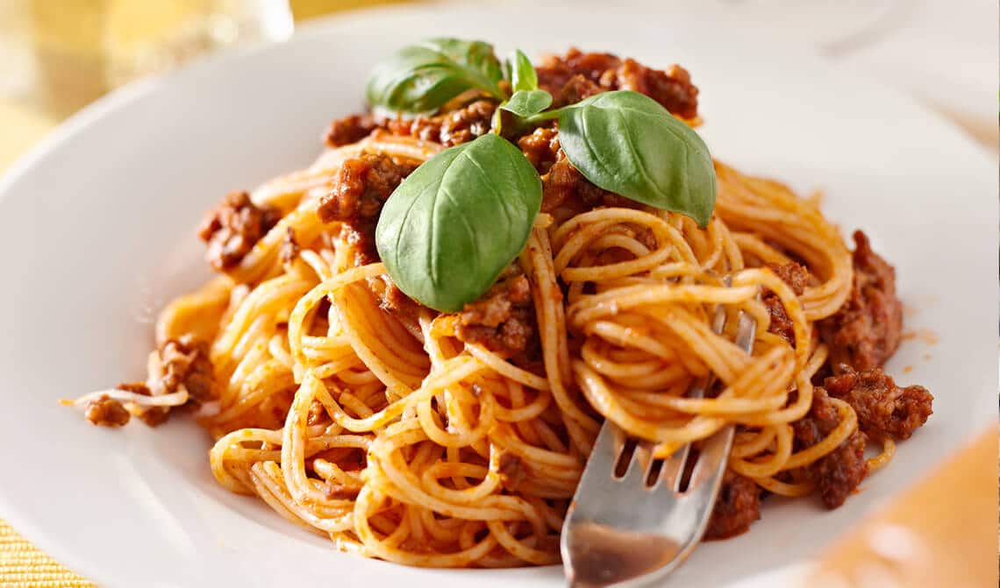

INICIO
ESPAGUETIS A LA BOLOÑESA

Preparacion
Prepara las salsas boloñesa
- Calineta un par de cuhardas de aceite de oliva en un sarten grade a fuego medio
- Sofrie la cebolla,el ajo y la zanahoria y el apio durante 6 o 7 minutos,hasta que esten tiernos
- Añade la carne molida y cocine hasta que se dore, deshaciendo desaciendo lod grumos con una cuchara de madera
Añadir el vino ( opcional)
- Agrega vino tinto y cocine durante 1 a 3 minutos para que se evapore el alcohol
Incorpora los tomates
- Añade el tomete triturado,la pasta de tomate,la hja de laurel,el oregano y la albahaca
- Mezcla bien y cocina durante fuego lento durante 20 a 30 minutos, removiendo ocasionalmente.
Si la salsa se espesa demasiado, añade un poco de agua o caldo
- Ajsuta el sabor con la sal y pimienta
Cocer los espaguetis
- mietras la salsa se cocina,pon a hervir una olla grade con agua salada
- Cosina los espaguetis segun las instrucciones del paquete,normal mente entre 8 a 10 minutos
Montar el plato
- Escure los espaguetis y mezclalos con la salsa boloñesa directamenente en el sarten para que se impregne bien
- Sirve en platos individuales ,espolovorea con queso parmesano rallado y decora con hoja de albahaca
Ingredientes
- 400g de espaguetis
- 400g de carne molida
- cebolla
- 2 diente de ajo fina mente picado
- zanahoria rallanda
- un tallo de apio fina mente picado (opcional)
- 40g de tomate triturado
- 2 cucharadas de pasta de tomate
- 100 miligramos de vino tinto (opcional)
- una hoja de laurel
- una cucharada de oregano seco
- una cucharadita albaca para decorar
- aceite de oliva
- sal y pimienta al gusto
- queso parmesano rallado (opcional)